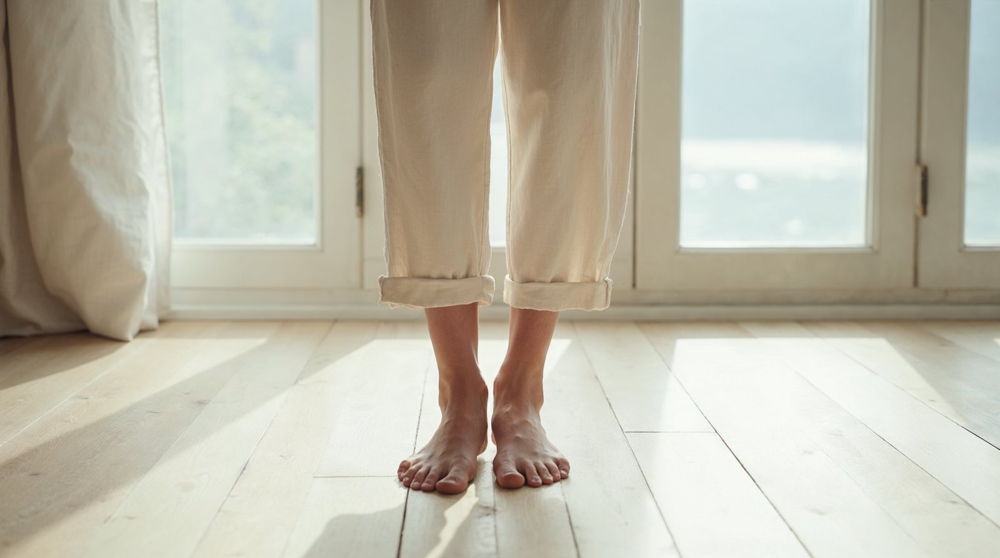
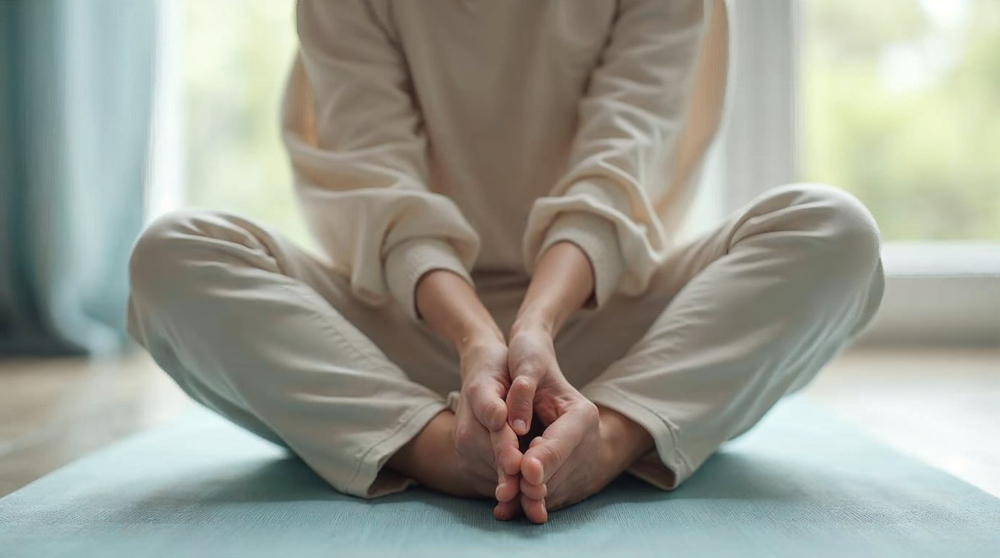

교정추나는 손으로 척추·관절·근육의 균형을 살피고 맞춰 가는 한의학 수기요법으로, 불편한 동작과 자세를 먼저 확인한 뒤 필요하다고 판단될 때 진행하며 건강보험 적용 여부는 진찰 후 안내합니다.
여쭙는 것
- 어떤 동작에서 가장 불편한가요? 앉았다 일어날 때, 고개를 돌릴 때, 허리를 숙일…
- 하루 중 언제 심한가요? 아침에 일어날 때인가요, 오래 앉아 있던 오후인가요?
- 다리를 꼬거나 한쪽으로 기대는 습관, 한쪽으로만 메는 가방이 있나요?
생활에서 해 볼 것
- 50분 앉아 있었다면 일어나 1~2분 걷거나 허리를 펴 주기
- 다리 꼬기를 의식적으로 줄이고 두 발을 바닥에 붙이고 앉기
- 가방은 양쪽 어깨에 메거나 좌우를 번갈아 들기
한의원에서 함께 살필 것
- 척추와 골반의 균형이 흐트러져 허리나 목이 뻐근한 경우 움직임과 자세를 함께 살핍니다.
- 한쪽으로 기운 자세가 오래되어 몸이 불균형하게 느껴지는 경우 체형과 생활 습관을 함…
- 운동이나 일상 동작 뒤 같은 부위가 반복해서 불편한 경우 그 동작을 직접 해 보며…
먼저 확인이 필요한 신호
- 넘어지거나 부딪힌 뒤 갑자기 심하게 아프고 움직일 수 없는 경우(골절 가능성)
- 다리에 힘이 빠지거나 저림이 점점 심해지는 경우
- 대소변 조절이 어렵거나 사타구니 감각이 이상한 경우

교정추나는 한의사가 손으로 척추와 골반, 관절, 근육의 균형을 살피고 맞춰 가는 한의학 수기요법입니다. 오래 앉아 일하는 직장인이나 하루 종일 책상 앞에 있는 수험생처럼 같은 자세를 오래 유지하다 허리와 목이 뻐근해진 분들이 많이 상담합니다. 모든 분이 받는 진료는 아니며, 불편한 동작과 자세를 먼저 확인한 뒤 필요하다고 판단될 때 진행합니다.
왜 이런 불편이 생길 수 있나요
- 같은 자세를 오래 유지하면 일부 근육만 계속 긴장하고 반대쪽은 덜 쓰이면서 몸의 균형이 한쪽으로 쏠릴 수 있습니다.
- 다리를 꼬거나 한쪽 어깨로만 가방을 메는 작은 습관이 반복되면 골반과 어깨 높이 차이로 이어지는 경우가 있습니다.
- 예전에 다친 발목이나 무릎을 무의식적으로 아끼며 걷다 보면 허리와 골반이 그 부담을 나눠 지기도 합니다.
- 한의학에서는 이런 구조의 쏠림과 함께 근육의 긴장, 잠과 피로처럼 몸 전체의 상태도 함께 살핍니다.
자주 하는 오해
- 추나는 꼭 뚝 소리가 나야 한다고 여기기 쉽지만, 소리는 치료의 목표가 아니며 부드러운 기법만으로 진행하기도 합니다.
- 누구나 받을 수 있다고 생각하기 쉽지만, 골절이나 심한 골다공증, 신경 이상이 있으면 적용하지 않거나 신중히 판단합니다.
- 한 번 받으면 자세가 바로 바뀐다고 여기기 쉽지만, 오래 굳은 습관은 생활 속 자세와 움직임을 함께 바꿔야 오래갑니다.
- 아플수록 세게 해야 한다고 생각하기 쉽지만, 자극의 세기는 편안하게 받아들일 수 있는 범위에서 조절합니다.

예를 들면 이런 경우입니다
- 예를 들어 하루 종일 앉아 일하다 퇴근 무렵 허리와 골반이 굳는 직장인이라면, 앉고 일어서는 동작과 골반 움직임을 먼저 확인합니다.
- 예를 들어 노트북으로 오래 공부해 목과 등이 굽어 보이는 대학생이라면, 등 위쪽과 목의 움직임을 함께 살피고 화면 높이도 함께 점검합니다.
- 예를 들어 강한 교정이 무섭다며 망설이는 어르신이라면, 뼈 상태와 복용 약을 먼저 확인하고 부드러운 기법이 맞는지 설명해 드립니다.
먼저 이렇게 여쭙니다
- 어떤 동작에서 가장 불편한가요? 앉았다 일어날 때, 고개를 돌릴 때, 허리를 숙일 때 중 어느 쪽인가요?
- 하루 중 언제 심한가요? 아침에 일어날 때인가요, 오래 앉아 있던 오후인가요?
- 다리를 꼬거나 한쪽으로 기대는 습관, 한쪽으로만 메는 가방이 있나요?
- 예전에 다치거나 수술한 부위가 있나요?
- 골다공증이나 암 병력, 복용 중인 약이 있나요?
- 골다공증이나 골절, 수술을 받은 적이 있나요?
스스로 점검해 보세요
- 같은 자세로 오래 앉아 있으면 허리나 목이 뻐근하다
- 자세가 틀어졌다는 말을 자주 듣는다
- 고개를 돌리거나 허리를 숙일 때 한쪽이 더 불편하다
- 어깨 높이나 골반 높이가 달라 보인다
- 목·어깨가 늘 뻣뻣하고 무겁다
- 강한 교정이 부담스럽다
해당 항목은 진료 때 말씀해 주시면 기법을 고를 때 참고합니다. 저림이나 힘 빠짐이 있다면 먼저 확인이 필요합니다.

일상에서 먼저 해 볼 수 있는 것
- 50분 앉아 있었다면 일어나 1~2분 걷거나 허리를 펴 주기
- 다리 꼬기를 의식적으로 줄이고 두 발을 바닥에 붙이고 앉기
- 가방은 양쪽 어깨에 메거나 좌우를 번갈아 들기
- 모니터를 눈높이에 맞추고 의자에 깊숙이 앉아 등받이에 허리 붙이기
- 아침에 일어나기 전 누운 채로 무릎을 가슴 쪽으로 천천히 당겨 보기
- 가방은 한쪽으로만 메지 말고 양쪽으로 나누어 메기
한의원에서 함께 살필 수 있는 경우
- 척추와 골반의 균형이 흐트러져 허리나 목이 뻐근한 경우 움직임과 자세를 함께 살핍니다.
- 한쪽으로 기운 자세가 오래되어 몸이 불균형하게 느껴지는 경우 체형과 생활 습관을 함께 살핍니다.
- 운동이나 일상 동작 뒤 같은 부위가 반복해서 불편한 경우 그 동작을 직접 해 보며 확인합니다.
- 누워서 자도 허리가 개운하지 않은 경우 수면 자세와 몸의 긴장을 살핍니다.
좋은꿈참사랑한의원에서는 먼저 불편한 동작을 충분히 듣고, 서 있는 모습과 걷는 모습, 아픈 동작을 직접 확인합니다. 필요하다고 판단될 때 상태에 맞는 강도와 방법을 정해 추나를 진행하고, 통증 부위와 상태에 따라 침·약침·체외충격파 등과 이어서 씁니다. 치료 뒤에는 같은 동작으로 다시 확인해 달라진 점을 기록하고, 다음 진료에서 그 이야기부터 이어서 여쭙니다. 추나요법은 건강보험 적용 대상 질환과 횟수 등 조건이 정해져 있어, 적용 여부와 본인부담금은 진찰 후 안내합니다.
첫 방문에는 불편한 동작과 자세를 먼저 여쭙고, 목·등·허리·골반을 직접 움직여 보며 압통과 근력, 저림 같은 신경 증상을 확인합니다. 필요하다고 판단되면 영상 검사 결과나 초음파를 함께 보고, 추나가 맞는지, 맞다면 어떤 기법이 맞는지 정해 설명해 드립니다. 추나 건강보험 적용 조건은 방문 전 전화로 확인해 주세요.
얼마나 지켜보고, 언제 상담하면 좋을까요
- 추나와 함께 생활 자세를 바꾸기 시작했다면 2~3주는 불편했던 동작이 어떻게 달라지는지 기록해 보세요.
- 같은 자리가 좋아졌다 나빠졌다를 몇 주째 반복한다면 상담을 받아 보시길 권합니다.
- 다리나 팔 힘이 빠지거나 대소변 조절이 어렵다면 기다리지 말고 큰 병원 진료를 먼저 받으세요.
이렇게 기록해 오시면 상담이 쉬워집니다
- 불편한 동작 한두 가지와 그때의 불편한 정도(예: 앉았다 일어날 때 10점 중 6점)
- 하루 중 심해지는 시간대와 그날 앉아 있던 시간
- 예전에 다친 부위와 받은 검사(X선, MRI) 결과지
- 복용 중인 약과 골다공증 진단 여부
이런 증상은 먼저 확인이 필요합니다
- 넘어지거나 부딪힌 뒤 갑자기 심하게 아프고 움직일 수 없는 경우(골절 가능성)
- 다리에 힘이 빠지거나 저림이 점점 심해지는 경우
- 대소변 조절이 어렵거나 사타구니 감각이 이상한 경우
- 열이 나면서 허리가 아프거나 밤에 누워도 쉬지 않는 통증이 이어지는 경우
- 심한 골다공증이나 암 병력이 있는 경우는 시행 전에 반드시 알려 주세요
이런 경우에는 영상 검사가 가능한 의료기관에서 먼저 확인하는 것이 안전할 수 있습니다. 복용 중인 약은 처방한 의사와 상의 없이 줄이거나 끊지 않습니다.
함께 읽으면 좋은 글
- 거북목과 일자목은 추나로 어떻게 살피나요?
- 오래 앉아 있으면 허리가 아플 때 한의원에서는 무엇을 먼저 묻나요?
- 출퇴근 지하철에서 오래 서 있으면 허리가 뻐근할 때
한눈에 보는 표
| 구분 | 핵심 |
|---|---|
| 여쭙는 것 | 어떤 동작에서 가장 불편한가요? 앉았다 일어날 때, 고개를 돌릴 때, 허리를 숙일 때 중 어느 쪽인가요? 하루 중 언제 심한가요? 아침에 일어날 때인가요, 오래 앉아 있던 오후인가요? |
| 생활에서 해 볼 것 | 50분 앉아 있었다면 일어나 1~2분 걷거나 허리를 펴 주기 다리 꼬기를 의식적으로 줄이고 두 발을 바닥에 붙이고 앉기 |
| 한의원에서 함께 살필 것 | 척추와 골반의 균형이 흐트러져 허리나 목이 뻐근한 경우 움직임과 자세를 함께 살핍니다. 한쪽으로 기운 자세가 오래되어 몸이 불균형하게 느껴지는 경우 체형과 생활 습관을 함께 살핍니다. |
| 먼저 확인이 필요한 신호 | 넘어지거나 부딪힌 뒤 갑자기 심하게 아프고 움직일 수 없는 경우(골절 가능성) 다리에 힘이 빠지거나 저림이 점점 심해지는 경우 |
자주 묻는 질문
추나요법은 어떤 진료인가요?
손으로 척추·관절·근육의 균형을 살피고 맞춰 가는 한의학 수기요법입니다. 적용 대상과 건강보험 적용 여부, 본인부담금은 진찰 후 안내해 드립니다.
교정이라고 하면 뼈 소리가 나나요?
방법에 따라 다르며, 소리가 나는 것이 목적은 아닙니다. 불편하거나 무서우면 바로 말씀해 주세요. 강도와 방법을 조정합니다.
한 번 받으면 자세가 바로 바뀌나요?
변화의 정도와 기간은 사람마다 다릅니다. 일상 동작의 변화를 기록하며 반응에 따라 방법을 조정합니다.
모든 환자가 추나를 받나요?
아니요. 진찰 후 필요하다고 판단될 때만 진행하고, 맞지 않으면 다른 방법을 안내합니다.
두개천골추나는 일반 추나와 어떻게 다른가요?
훨씬 부드러운 접촉으로 머리·척추·천골 주변을 살피는 방식입니다. 어떤 방식이 맞을지는 진찰 후 말씀드립니다.
이 글은 일반적인 건강 정보이며 개인의 진단이나 치료를 대신하지 않습니다. 증상이 있거나 복용 중인 약이 있다면 진료를 통해 확인하세요. 치료 효과는 개인마다 다를 수 있습니다.
작성 기준: 일반적으로 알려져 있는 건강 정보를 참고해 정리했습니다(대표원장 감수). 증상 기록은 1~2주 동안 하루 1회, 비슷한 시간에 적어 오시면 지난 상태와 비교하기 쉽습니다.
좋은꿈참사랑한의원은 재진 때 지난번 이야기부터 이어서 여쭙니다. 진료시간과 예약은 오시는 길에서 확인하세요.
어디서 상담받을 수 있나요?
좋은꿈참사랑한의원은 서울 동작구 만양로2길 2 신성빌딩 3층·5층(서울 동작구 상도동, 7호선 상도역 3번 출구 근처)에 있습니다. 한의사 3명(이종호 대표원장, 조영기 수석진료원장, 정원영 진료원장)이 진료합니다. 진료시간은 평일 09:30~20:00(점심 13:00~14:00), 토·일·공휴일 09:30~15:00이며, 방문 전 전화로 확인을 권합니다. 예약은 네이버 예약, 카카오톡 상담, 전화 02-815-7510로 받습니다.